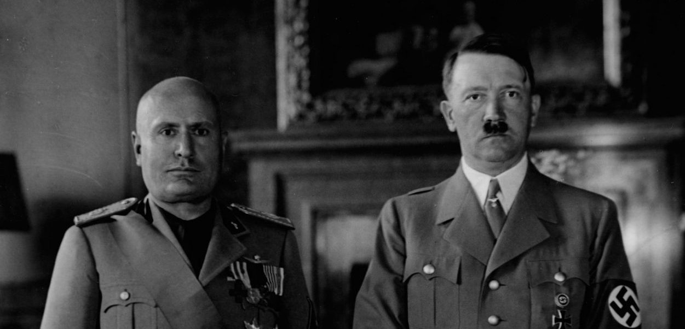
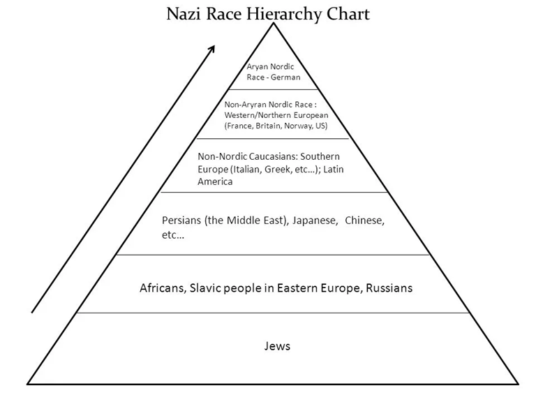
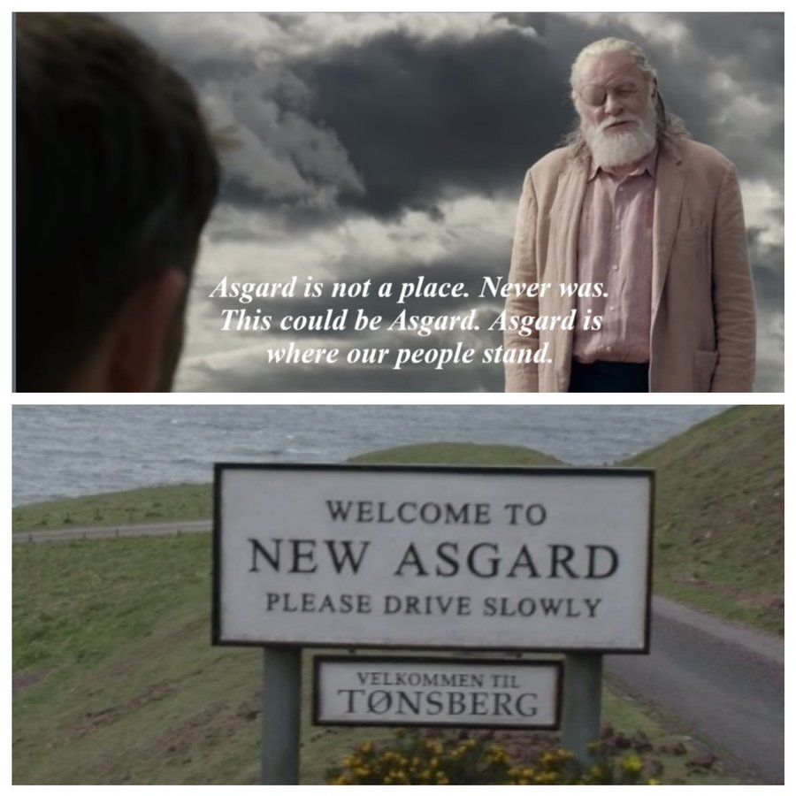
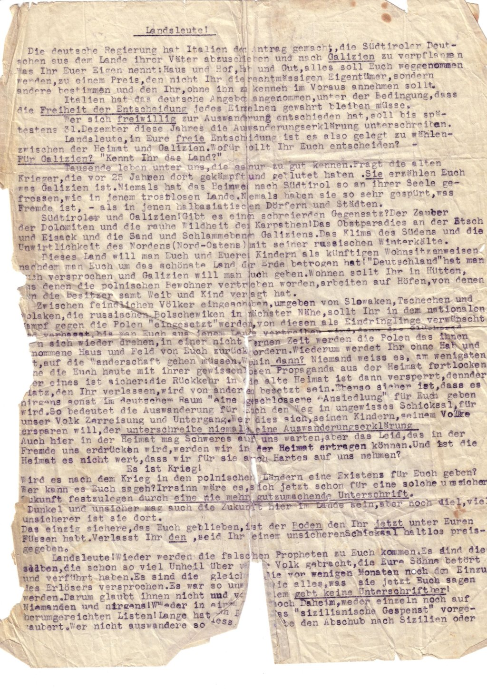
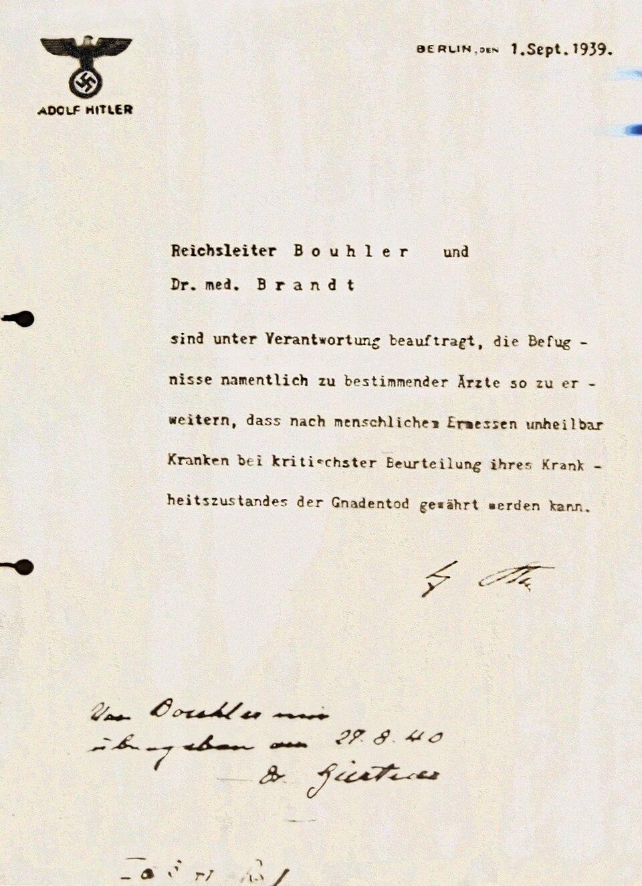
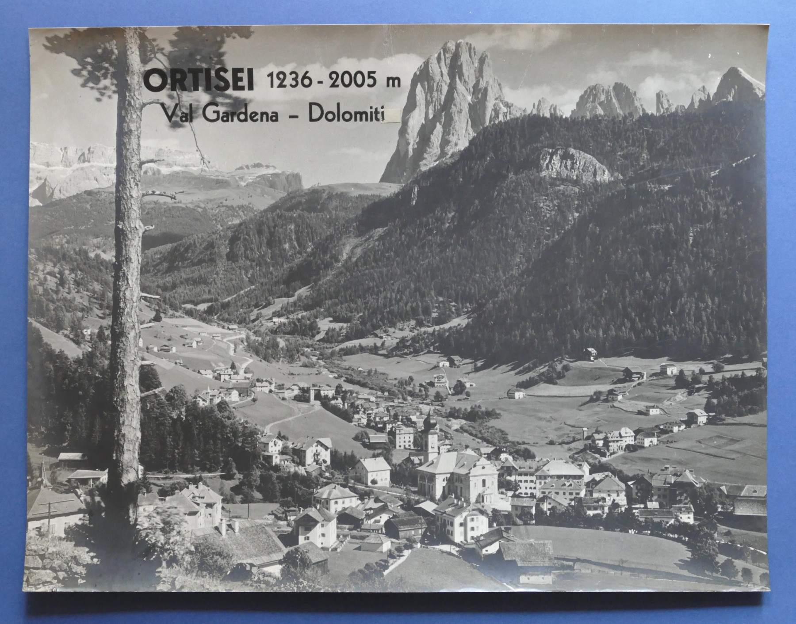
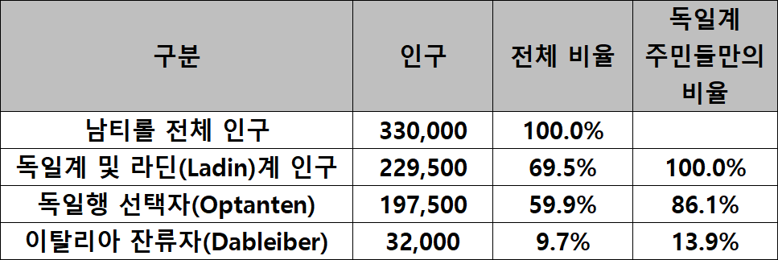
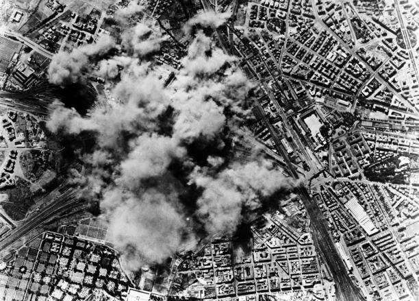

남티롤(Südtirol) 이야기 (5) - 아스가르드는 장소가 아니다
게시: 2026-06-18T06:30:22+09:00
1920년대 바이마르 공화국 시절, 독일과 오스트리아의 우익 민족주의자들은 이탈리아가 남티롤의 독일계를 탄압하자 분노하며 "남티롤을 무력으로라도 되찾아야 한다"고 주장했습니다. 공식 명칭이 ‘국가사회주의 독일 노동자당'인 나찌의 이념을 한마디로 표현하기는 어렵겠습니다만, 그래도 굳이 한다면 극우 민족주의입니다. 그런 나찌가 정권을 독일에서 정권을 잡고 오스트리아까지 병합했다면, 그리고 그 정당의 수괴가 오스트리아인 히틀러라면, 남티롤에 대해서도 뭔가 조치가 있어야 했습니다.

(강호의 도리 측면에서 엄격히 이야기하면 무솔리니가 히틀러의 파시스트 선배였고, 실제로 히틀러는 무솔리니의 연설 스타일 같은 것을 꽤 많이 배워서 흉내냈다고 합니다. 이 둘은 서로 만나서 이야기할 때 어느 나라 말로 했을까요? 무솔리니는 젊은 시절 정치적 망명과 교사 생활 등을 거치며 외국어 습득에 상당히 공을 들인 사람으로서, 프랑스어, 영어, 독일어를 꽤 유창하게 구사했습니다. 특히 히틀러와 만날 때 무솔리니는 통역 없이 1대 1로 직접 대화하는 것을 선호했는데, 그는 자신이 히틀러보다 지적으로 우월하며, 국제적인 정치가로서 완벽하다는 것을 과시하고 싶어 했기 때문이었습니다. 그러나 실은 그렇게까지 완벽한 독일어를 구사하지는 못했으므로, 종종 히틀러의 장광설을 알아듣지 못했고, 회담 이후에 '히총통이 뭐라고 한 거니?'라고 따로 묻는 일이 자주 있었다고 합니다.) 그런데 그게 쉽지 않았습니다. 일단 히틀러는 현실주의자로서, 유럽 정복을 위해서는 무솔리니 파시스트 정권의 협력이 꼭 필요하다고 보았습니다. 그런데 협력이 남티롤 때문에라도 쉽지 않았습니다. 일단 같은 극우 파시스트라고 해도, 서로가 최고 존엄 민족이라고 우기는 독일과 이탈리아의 파시스트들끼리 사이가 원만할 수가 없었는데, 하물며 이탈리아는 독일계 남티롤인들을 극심하게 탄압 중이었던 것입니다. 이건 히틀러와 친하게 지내고 싶었던 무솔리니로서도 양보할 수 없는 문제였습니다. 파시스트의 본질이 우리 민족 최고를 주장하는 것인데, 이제 와서 독일이 힘 좀 붙었다고 이탈리아가 양보하는 모습을 보인다면 파시스트 정권 유지가 어려웠기 때문입니다. 그런 상황 속에서 남티롤의 독일 민족주의 운동을 주도하는 사람들 중 상당수가 나찌 당원이거나 나찌 동조자였습니다. 그러니 히틀러로서도 방관할 수는 없었습니다.

(나찌에 따르면 독일인들만 최고 존엄 민족은 아니었고, 스웨덴과 덴마크 등 노르딕인들도 독일인들과 동급의 우수 민족이었습니다. 2등 민족으로서 그래도 독일인들과 동맹을 맺을 만한 가치를 가진 민족들이 영국인, 프랑스인, 미국인 등이었고, 이탈리아와 그리스 등 남부 유럽인들은 3등 민족에 불과했습니다. 나름대로의 문명을 일구어낸 중국, 일본, 이란인들은 4등 민족인데, 희한하게도 히틀러는 슬라브인들을 미워하여 흑인들과 함께 바닥에 깔았습니다. 유태인은 그냥 말살 대상이었고요.) 그래서 무솔리니와 히틀러 사이의 협상 결과로 나온 것이 1939년의 '옵션 협정'(Option in Südtirol)이었습니다. 이건 나름대로 머리를 잘 쓴 것인데, 영화 토르:라그나로크에 나온 오딘의 명대사가 여기서 나온 것 아닐까 싶은 발상이었습니다. 즉, 남티롤은 장소가 아니며, 남티롤인들이 사는 곳이 남티롤이라는 것이었습니다. 그래서 히틀러와 무솔리니는 남티롤인들에게 선택권(option)을 주어, 이탈리아인으로 살고 싶은 자는 남고, 독일인으로 살고 싶은 자는 독일로 오라는 것이었습니다.

(아스가르드는 장소가 아니고, 아스가르드인들이 바로 아스가르드인 거지요. 그러니까 독일 어딘가에 새로운 남티롤을 만들면 된다는 마블적 발상이었습니다.) 물론 이주를 택한 남티롤인들에게는 보상이 제시되었습니다. 현금이나 물품, 귀금속, 가축 같은 동산에 대해서는 기차로 무료 운송을 제공했고, 가져갈 수 없는 주택과 토지, 공장 등의 부동산에 대해서는 이탈리아와 독일 양국이 각각 감정 평가 기구를 만들어 자산을 평가하고 비교한 뒤, 이탈리아-독일 국가 간의 현물 청산을 하도록 했습니다. 즉, 남티롤인들이 남기고 가는 부동산의 평가 가치만큼 이탈리아가 독일에게 이탈리아산 원자재, 군수품, 농산물 등을 공급하는 형태였습니다. 그리고 독일 나찌 정부가 남티롤인들에게 그에 상응하는 가치의 주택과 토지, 사업장 등을 제공하도록 했습니다. 이건 이탈리아로서도 매우 남는 장사였습니다. 그렇잖아도 독일계 주민들의 이탈리아화에 골치를 앓고 있었는데, 그들이 제 발로 떠난다면 빈 자리에 이탈리아계 주민들을 이주시키면 너무 좋았으니까요. 당연히 달콤한 여러가지 약속도 제시되었습니다. 가령 남티롤인들이 고향의 이웃, 가족들과 떨어지지 않도록 독일 제국 내에 특정 '남티롤인 정착촌'을 건설하여 통째로 이주시켜 주겠다고도 약속했습니다. 실제로 오스트리아 서부 티롤과 포라를베르크(Vorarlberg) 지역에 이들을 위한 대규모 아파트 단지(일명 '옵탄텐 주택', Optanten-Siedlungen)들이 급히 건설되었습니다. 그러나 실제로는 독일도 땅이 부족하여 ‘레벤스라움'(Lebensraum, 생존 공간이라는 뜻)이라는 이름으로 토지 확보를 위해 동유럽 침공에 나서는 판국이었습니다. 당연히 이주해올 남티롤 주민들에게 줄 기름진 농토 따위는 없었고, 나중에 실제로 이주해온 주민들에게는 폴란드인들을 학살하고 빼앗은 폴란드 땅을 주었습니다. 그나마 1941년 독소 전쟁 발발 이후로는 여력이 없어져 이탈리아와의 현물 청산도 중단되었고 남티롤 주민들은 난민 수용소에 기거하다가 남자들은 징집되어 소련 전선에 투입되는 신세가 되었습니다. 그런 것은 모두 1~2년 뒤의 일이었고, 당장 1939년 12월 31일까지 선택을 하라고 통보 받은 남티롤인들의 마음은 복잡했습니다. 대대로 살아온 남티롤을 떠나야 하는 것은 결코 쉽지 않은 결정이었으니까요. 그런 큰 선택을 결정할 때 독일계 주민들 간에도 많은 갈등이 있었습니다. 평소 무솔리니의 남티롤 탄압에 맞서 뜻을 같이 하며 저항 지하활동을 하던 사람들끼리도 편을 갈라 다투었던 것입니다. 특히나 나찌에 동조하는 사람들은 '우리는 독일로 이주하여 위대한 독일 건설에 힘을 보태야 한다'라며 사람들을 선동했고, 미하엘 감퍼 (Michael Gamper) 같은 카톨릭 신부들을 중심으로 하는 남티롤의 정체성을 지키고자 하는 사람들은 '체제에 속지 말고 조상들의 땅을 지켜야 한다'라며 잔류를 호소했습니다.

(이건 1939년 당시 잔류파들의 홍보물입니다.)

(미하엘 감퍼 신부는 남티롤 애국자이긴 했으나 나찌에 대해서는 단호하게 반대하는 입장을 가지고 있었습니다. 히틀러도 표면적으로는 카톨릭 신자이고 당시 로마 교황청도 공산당에 대한 대항마로서 히틀러를 긍정적으로 보고 있었는데도 감퍼 신부가 나찌에 저항한 것은 나찌의 반인륜적인 전체주의 떄문이었습니다. 특히 감퍼는 1940년 히틀러의 악명 높은 (아동을 포함한) 장애인 학살 계획인 'T4 작전(Aktion T4)'을 폭로하는 기사를 남티롤 지방신문에 실으며 정면으로 저항했습니다. 이 서류는 히틀러가 서명한 T4 작전 문서로서, 내용은 아래와 같습니다. "제국 지도자 보울러와 브란트 박사는 지명된 의사들의 권한을 확대하는 책임을 위임받는다. 이에 따라, 가장 엄격한 진단을 거쳐 인간의 판단력에 비추어 볼 때 불치로 판명된 환자들에게 안락사를 베풀 수 있도록 한다. - A. 히틀러") 그런데 당시는 유럽 나찌/파시스트가 미쳐 날뛰던 시절이었고, 남티롤의 많은 독일인들도 사실 나찌에게 많은 기대를 걸고 동조하고 있었습니다. 특히나 젊은이들의 나찌에 대한 동경이 매우 강했습니다. 이미 남티롤에는 나찌의 하부 조직이라고 할 수 있는 Völkischer Kampfring Südtirols (VKS, 남티롤 민족주의 투쟁동맹)이 결성되어 있었는데, 이들이 주동하는 이주파는 주민들에게 이주해야 하는 당위성을 선전하는 것을 넘어, 잔류파에 대한 조롱과 협박, 흑색 선전을 적극적으로 수행했습니다. 이주파는 독일어로 옵탄텐(Optanten)이라고 불렸는데, 이는 독일행 옵션을 택한 자(Optanten für Deutschland)라는 뜻이었고, 잔류파는 다블라이버(Dableiber)라고 불렸는데 이건 '여기에 남는자'라는 뜻이었습니다. 옵탄텐들은 다블라이버들에 대해 "민족의 배신자", "이탈리아의 앞잡이", "겁쟁이"라 부르며 (심지어 면전에서 침을 뱉으며) 모욕했고, 상점 이용을 막는 등의 차별과 따돌림 행위를 저질렀습니다.

(1930년대 남티롤 오르티세이의 모습입니다. 돌로미티 산맥이 내려다보는 저 아름다운 고장에서도 극우파들이 집권한 광풍 속에 휘말려 많은 갈등이 생겨났습니다.)
이런 강압적인 분위기 때문인지 남티롤 주민 상당수가 나찌 동조자여서 그랬는지, 1939년 말까지 독일계 주민의 무려 86%가 독일행을 택했습니다. 진짜 나쁜 점은 그렇게 결정이 난 이후에도 옵탄텐들은 다블라이버들을 그 이후로도 한참 동안이나 괴롭혔다는 것입니다. 아무래도 20만 명에 달하는 옵탄텐 주민들이 한꺼번에 티롤을 떠날 수는 없었으니, 한동안 그렇게 불편한 동거가 계속 될 수밖에 없었기 때문입니다.

(원래 WW1 종전 당시만 해도 남티롤에는 이탈리아계 인구가 5% 미만으로 매우 작았습니다만, 무솔리니 집권 이후 노골적인 이탈리아화를 진행하고 이탈리아 주민들을 남티롤로 이주시키면서 1939년에는 남티롤 인구 중 30% 정도가 이탈리아계가 되었습니다. 그 자체가 남티롤 사람들로서는 큰 불만이었지요.) 그래도 결국 옵탄텐들은 독일로 떠나갈 거니까, 소수인 다블라이버들은 참고 견디기만 하면 그런 괴롭힘에서 벗어날 수 있다는 희망이 있었습니다. 실제로 옵탄텐들 중 약 1/3인 7만5천 정도가 1943년 중반까지 독일로 이주했습니다. 그러니까 그떄까지도 아직 옵탄텐이 훨씬 다수였다는 소리입니다. 그런데 그 상태로 옵탄텐들의 이주가 딱 멈춰버리는 사태가 발생했고, 다블라이버들은 더 큰 고초를 겪게 됩니다. 1943년 7월 무솔리니가 실각하고, 1943년 9월 독일군이 전격적으로 이탈리아를 침공하는 사태가 벌어졌던 것입니다. 남티롤에도 독일군이 쏟아져 들어왔습니다. (다음 주에 계속...)

(무솔리니의 실각은 놀랍게도 파시스트 간부 회의의 민주적 투표에 의해 찬성 19표, 반대 8표, 기권 1표로 가결 되었는데, 거기에 큰 영향을 준 것이 연합군의 로마 폭격이었습니다. 로마는 상징적인 도시였으므로 연합군도 어지간해서는 폭격하지 않고 있었으나, 무솔리니의 실각을 유도하기 위해 1943년 7월 19일 로마의 화물 야적장 및 제철소, 인근 공항 등을 무려 521대의 항공기를 동원하여 폭격했습니다. 아마 트럼프가 이란을 폭격한 것도 그런 결과를 유도해낼 수 있다는 순진한 생각이었을 것입니다.)